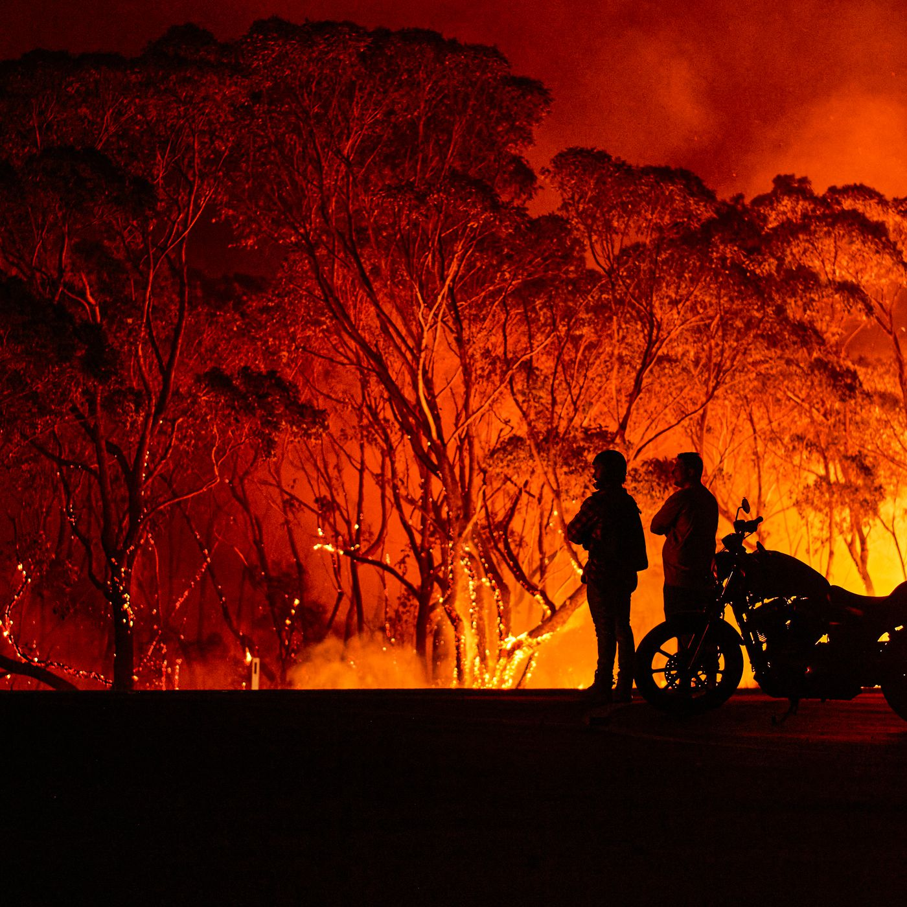

Australian bushfire-2020

In december 2019, Australia experienced its hottest day ever on record, with temperatures reaching near 50C. Hot, dry weather combined with ongoing drought and strong winds have created the perfect conditions for fire to spread quickly.